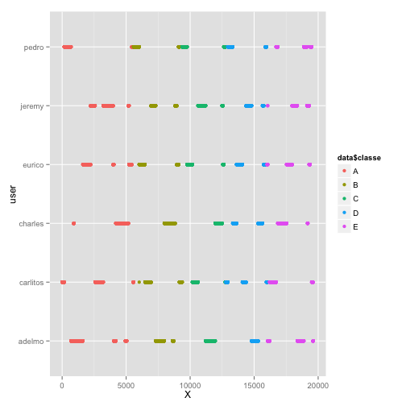
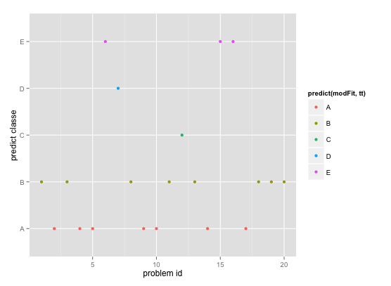

- nearZeroVar() for data pre-process
- Random Forest for model training
- K-fold cross validation (k=10)
- 100% In-Sample accuracy, 99.87% Out-of-Sample accuracy
- 100% accuracy on pml-testing.csv prediction
Course Project Writeup
Practical Machine Learning on Cousera
mirizzi
Overview (prediction mechanism and outcome)
Data pre-processing - handle missing values
## Warning: package 'caret' was built under R version 3.1.2
## Loading required package: lattice
## Loading required package: ggplot2
data = read.csv('pml-training.csv'); data2 = read.csv('pml-testing.csv')
dim(data);
## [1] 19622 160
In data2, we can see lots of NA value, we should skip those columns in building model
nzv <- nearZeroVar(data2) #in this case, nearZeroVar can help remove missing data
data <- data[,-nzv] # note: we can apply nzv found on data2 to data because
dim(data) # the column name and order in pml-testing.csv is same with pml-training.csv
## [1] 19622 59
Then the training set now has 59 columns (58 predictors + 1 target column)
Data pre-processing - remove more predictors
qplot(data$X,data$user_name,colour=data$classe,xlab="X",ylab="user")

Data pre-processing
As shown in the graph on previous page, 'X' is just a sequence id for each data row and might cause severe bias. (In my test includes this predictor, it has dominant varImp() and result in my prediction on 20 dataset are all 'A' because they have small problem_id as 1-20 )
data <- data[,-1] # remove 'X' column which is in the first position
Partition the data into training set and testing set by 60-40 ratio
inTrain <- createDataPartition(y=data$classe,p=0.6, list=F)
training <- data[inTrain,];testing <- data[-inTrain,]
dim(training);dim(testing)
## [1] 11776 58
## [1] 7846 58
Now we have 57 predictors (another one is target variable) to build our model
Training mechanism (cross-validation and random forest)
Here I apply cross validation to better indepdently estimate accuracy. I set k=10 hope to have less bias. Random forest method take relatively longer (around 20-30 mins in my machine), but accuracy is good, compare with 'rpart'.
myTC = trainControl(method="cv",number=10)
modFit <- train(classe~.,data=training,method="rf",trControl=myTC)
Random Forest
- 11776 samples, 57 predictors, 5 classes: 'A', 'B', 'C', 'D', 'E'
- Type of random forest: classification.
- Number of trees: 500. No. of variables tried at each split: 40
- OOB estimate of error rate: 0.08%
Out-of-sample error and prediction outcome
we can use qplot (or confustionMatrix) function to show the prediction based on the model
qplot(predict(modFit,testing),classe,data=testing,main="Out-of-Sample Accuracy",
xlab="predict classe", ylab="actual classe")

The 99.87% Out-of-Sample accuracy is still high enough. (and the model has 100% In-Sample accuracy)
Prediction on data in pml-testing.csv
qplot(data2$problem_id,predict(modFit,data2), colour=predict(modFit,data2),
xlab="problem id",ylab="predict classe", height="100")

It has 100% of accuracy (all passed online grader)
Other - rf variable importance
After check with varImp(), It's interesting that this random forest model mostly use 'raw_timestamp_part_1', 'roll_belt ', and 'num_window' to make prediction
varImp(modFit)
| Overall | |
| 100.000 | raw_timestamp_part_1 |
| 44.774 | roll_belt |
| 43.274 | num_window |
| 26.395 | pitch_forearm |
| 19.331 | magnet_dumbbell_z |
| 15.382 | magnet_dumbbell_y |
| (below omitted....) |